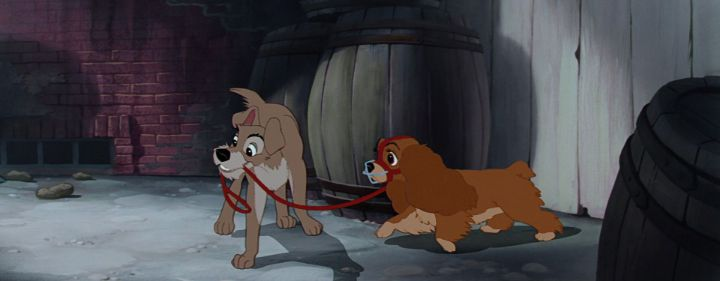

Ah, "Lady and the Tramp," a classic Disney film. You know the one: it has the scene with the two dogs eating spaghetti, accidently kissing each other when they eat the same strand, to the song of "Bella Notte." Everyone knows that scene. But can you recall anything else about the movie? "Lady and the Tramp" is one of those strange movies that you'd assume everyone has seen, even though most people probably haven't, or if they have, it wasn't memorable enough for them to know most of the plot. Compared to the dozen or so prior movies Disney produced, "Lady and the Tramp" is probably closest to being a spiritual scucessor to "Bambi," in that the plot is based around a coming-of-age story (from childhood to adulthood) of an animal, from the perspective of animals instead of humans. This time, the animals are dogs, both as pets and as wild strays. It's a love-letter to dogs, and dog owners will get the most out of this story. It even opens with a letter from the production team dedicating the movie to man's best friend. The first of many: both mice and dogs are animated so wonderfully by Disney that we can't help but fall in love with them under the animator's care, and they are repeated as subjects in future movies. The movie also happens to be rendered in Cinemascope aspect ratio, wider than 16:9, when prior movies were still in that square aspect ratio: this was brand new to Disney animation, and makes the movie feel much more grand and cinematic. The movie is told from the perspective of Lady, a sweet cocker spaniel, gifted to a human couple (known by Lady as "Darling" and "Jim Dear," which must be their names since that's what they call each other). Lady is a Christmas present as a puppy, and we watch her first day in charming detail (including being left to sleep alone in the basement, her whining for attention until she's allowed to sleep with her masters). Lady grows up, and is beloved by her owners, despite some minor and cute mistakes Lady makes that are quickly forgiven. She even gets a new collar, with a tag indicating her license and ownership, which she's proud to show off to her well-to-do neighbors dogs, the Scottish terrier Jock and old bloodhound Trusty. Truly, Lady is living a pampered life and wants for nothing.But then something changes in the household. After months of confusion, Lady learns that her owners have a new baby, which took away some attention from her, but also brings joy to everyone. Initially confused as to whether there was still a place for her, Lady understands a sense of responsibility to care for the baby. That's when Tramp walks by, insisting that the baby will bring nothing but trouble, and that Lady will eventually be kicked out and homeless. Tramp is a stray, and proud of his "collar-free" lifestyle, able to roam the entire countryside as he pleases, and even begging for scraps from multiple "owners" each week, as long as he stays away from the Dog Pound catchers. Lady had never considered that there was a life outside her house's backyard, and when a temporary babysitter (with two nasty Siamese cats) tried to put a muzzle on Lady, she escapes and sees these new world firsthand, with Tramp as her guide.  Naturally, dogs are popular, and it's a clever idea to see the human town from the perspective of a dog, including all the benefits and dangers of life. But it makes for a slow story, especially with the naive and inexperienced Lady at the center of it. If she had known as much as either Tramp or her neighbor dogs did about humans and babies, the movie would only be half as long! The best part was the beginning, during Lady's puppyhood, and everything after that feels a bit aimless. If the dogs weren't so cute and full of life, I'd go so far to say it was boring. At least in this romance, the male and female leads are both well-realized. Lady does learn from her experience with Tramp, and has a sense of duty to stay to protect the baby, even if a world without masters means more freedom, a beautiful message. Tramp is charming, but isn't a faithful Prince, and Lady learns from others that she isn't the first girl he's wooed, which he has trouble justifying. By the end of the movie, both have grown a lot and are better off than they were. The production quality feels bigger than before, with fantastic renderings of the modern (circa 1950's) American town, its houses and sidewalks and shops. Characters (mostly dogs) are given designs that allow their animated-expressions to look lively and attractive, while also largely realistic. There's a nice musical score throughout, but this isn't really a full musical, with only three proper vocal songs, and "Bella Notte" being the only one people would remember. Voice acting is good from everyone (I particularly liked Larry Roberts as Tramp, in one of his only roles for Disney), although some thick accents make it difficult to catch every spoken word. "Lady and the Tramp" is probably the most classic of the Disney dog movies, and is absolutely worth watching, but I'd tend to recommend "101 Dalmations" first for being a lot more fun and exciting. You also have "The Aristocats" for cats, "Oliver & Company," and some others. By comparison, this movie is a little too slow and old-fashioned to keep up with modern audiences.
- "Ani" More reviews can be found at : https://2danicritic.github.io/ Previous review: review_Kyousougiga Next review: review_Laidbackers